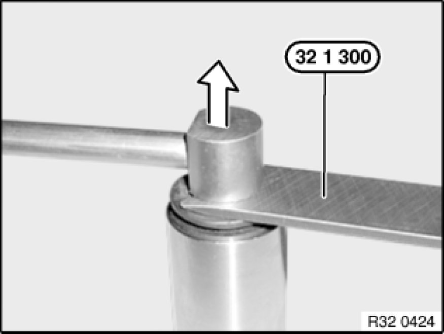

Notes on Removing/Installing FCD Clutches
32 13 ... - Notes on removing/installing FCD clutches

Special tools required:
- 32 1 030 32 1 030 Lever
- 32 1 300 32 1 300 Fork

There are 2 different types of FCD clutches:
1. FCD clutches with plastic caps
2. Metal FCD clutches (N73 only!)
FCD clutches without plastic caps must be replaced with a suitable special tool!
FCD coupling with plastic caps:
Removal
To release quick-release coupling, turn cap from position (A) - closed - to position (B) - open.
Unlock quick-release coupling by pressing on cap (1).
Detach line while pressing cap.
In event of removal while installed, use special tool 32 1 030 32 1 030 Lever. Position special tool close to locking head.
If necessary, fit repair kit for FCD coupling.
Installation
Coat seal pack (O-ring (1), support ring (2)) with hydraulic fluid before sliding in.
Slide quick-release coupling into housing by pressing on coupling cover.
Quick-release coupling must snap into place with an audible "click".
If necessary, lock coupling by turning cap from position (B) to position (A).
Lug of coupling must be over line outlet - position (A).
Metal FCD clutches:
Removal
Metal quick-release couplings can only be opened with special tool 32 1 300 32 1 300 Fork.
Slide special tool 32 1 300 32 1 300 Fork between metal head (1) and rubber lip (2) of quick-release coupling.

Slide in special tool 32 1 300 32 1 300 Fork as far as it will go. Quick-release coupling unlocks with a light click.
Then pull off coupling and tool towards top.
Installation
Remove tool.
Press quick-release coupling into steering gear.
Quick-release coupling must snap into place with an audible click.